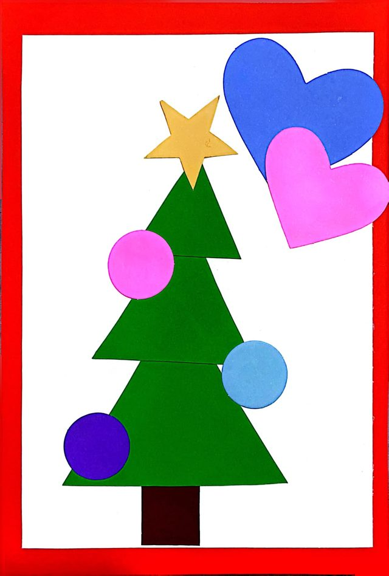
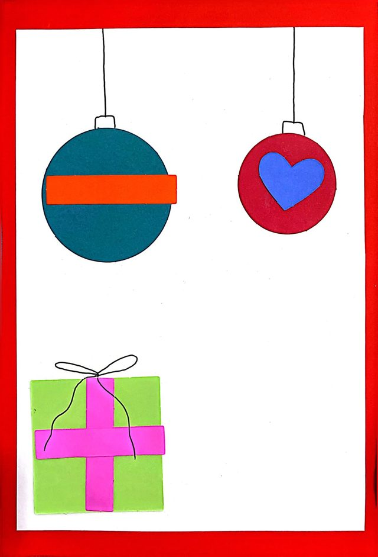
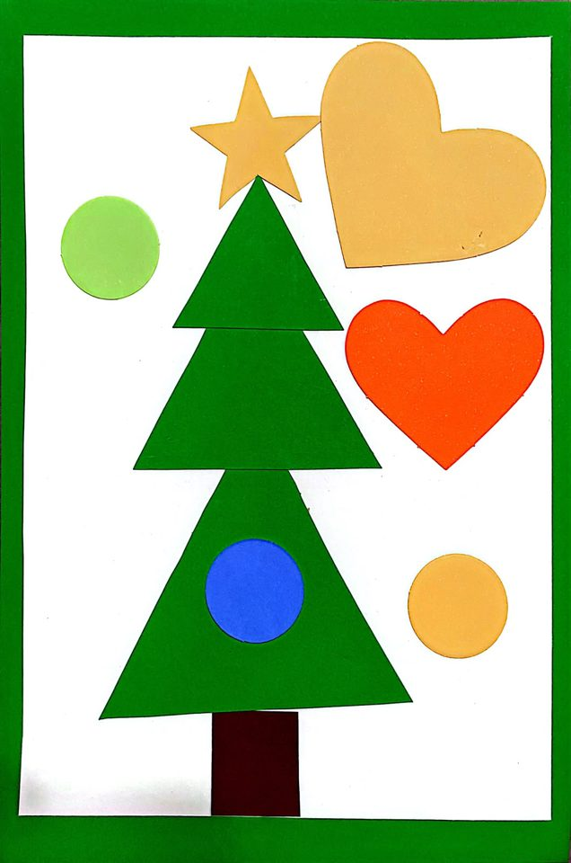
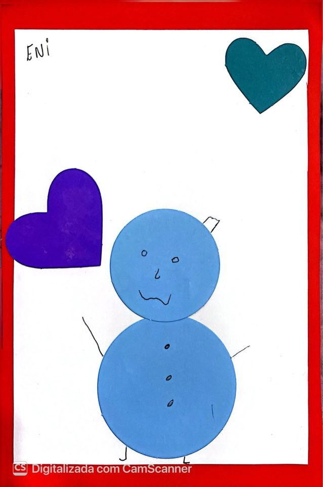
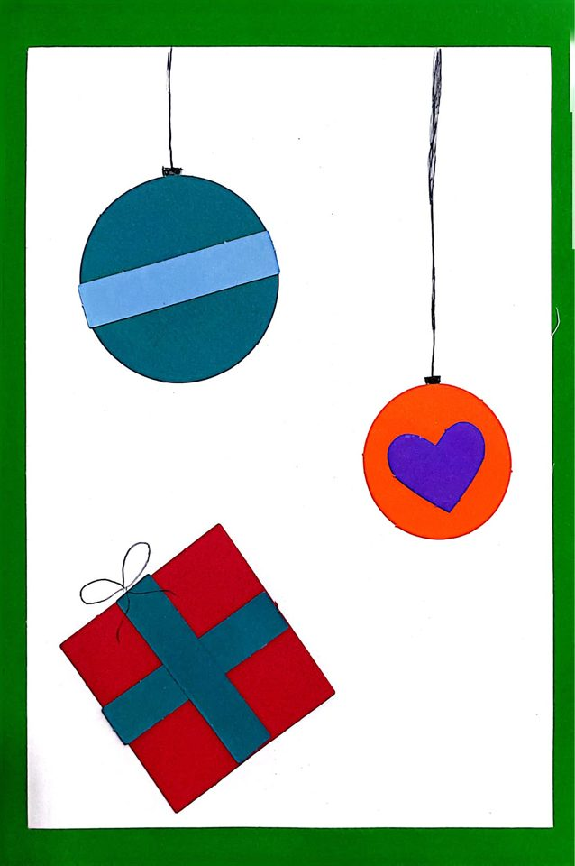

Bem-estar
Atividades acolhedoras, no ritmo de cada pessoa, que estimulam a criatividade, a autoestima e a alegria.
Oficinas de arte que aproximam gerações, despertam lembranças e fazem do encontro um presente.
O Entre Gerações é um projeto de extensão universitária que promove bem-estar e socialização para pessoas idosas, com acolhimento, escuta e criação coletiva.
Nas oficinas, estudantes e pessoas idosas criam juntos. A arte abre espaço para contar histórias, fortalecer vínculos e celebrar o Natal com afeto.
Atividades acolhedoras, no ritmo de cada pessoa, que estimulam a criatividade, a autoestima e a alegria.
Um espaço para conversar, ouvir e criar junto, que aproxima pessoas de idades diferentes.
Cada obra guarda uma lembrança. As criações dos participantes ganham destaque e viram história compartilhada.
Momentos das oficinas. Os itens carregam aos poucos para a página ficar leve.
As criações feitas pelos participantes nas oficinas. Passe o mouse sobre cada obra, ou toque e arraste no celular, para vê-la ganhar profundidade.









Em breve, cada obra terá um QR Code com a história por trás dela.
Os relatos de cada oficina serão publicados aqui, na ordem em que aconteceram.
Em breve: como foi a chegada, as apresentações e a primeira criação em grupo.
Em breve: as histórias que as obras fizeram surgir.
Em breve: enfeites, cores e tradições feitas à mão.
Em breve: a celebração final e o que levamos uns dos outros.
Participou de uma oficina ou visitou o projeto? Conte como foi. Leva menos de um minuto e nos ajuda a cuidar melhor de cada encontro.